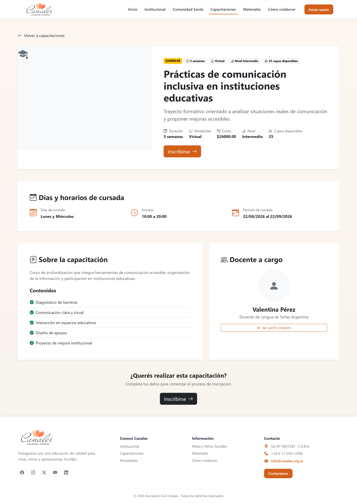
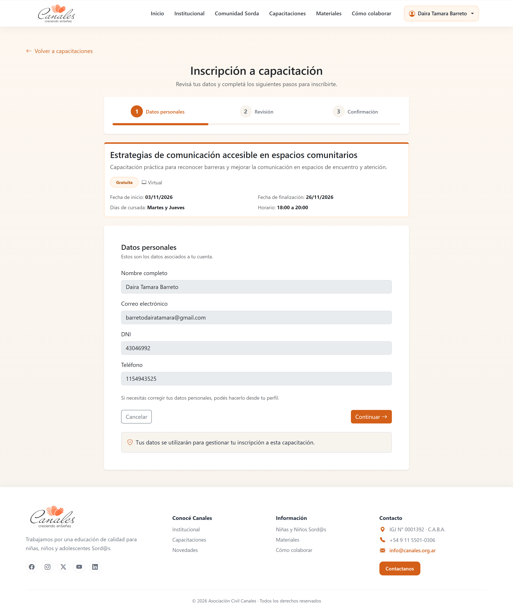
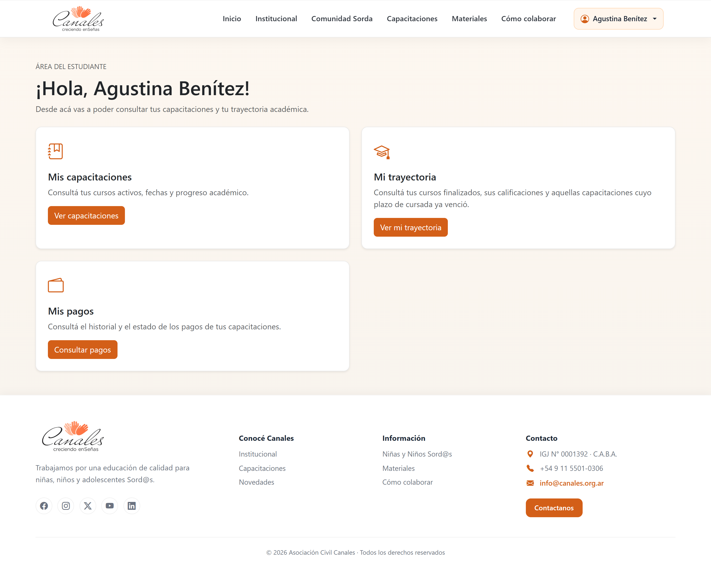
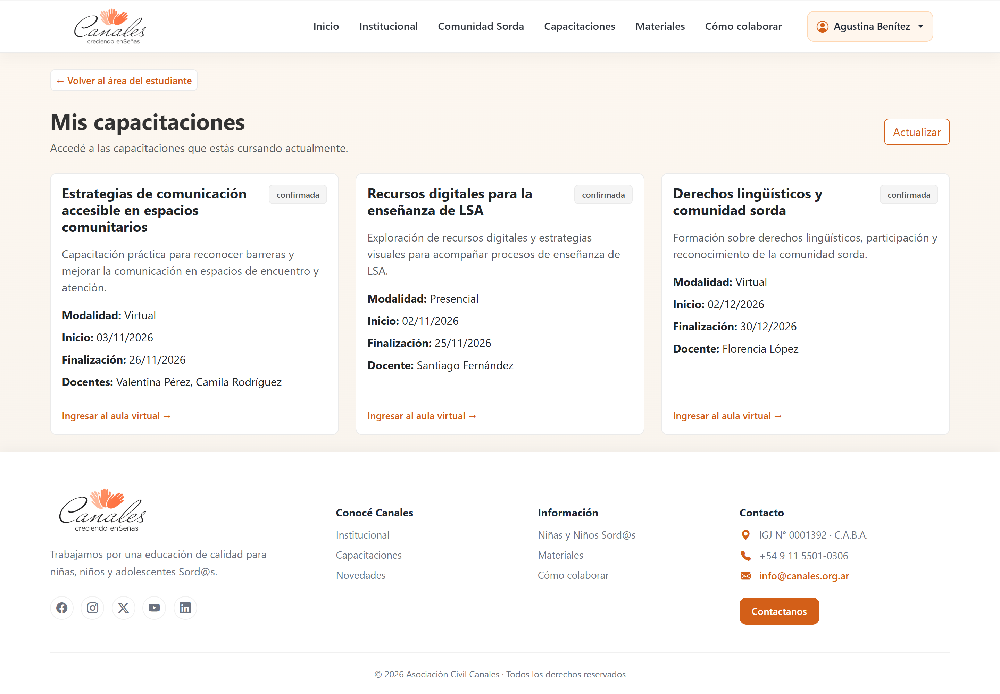
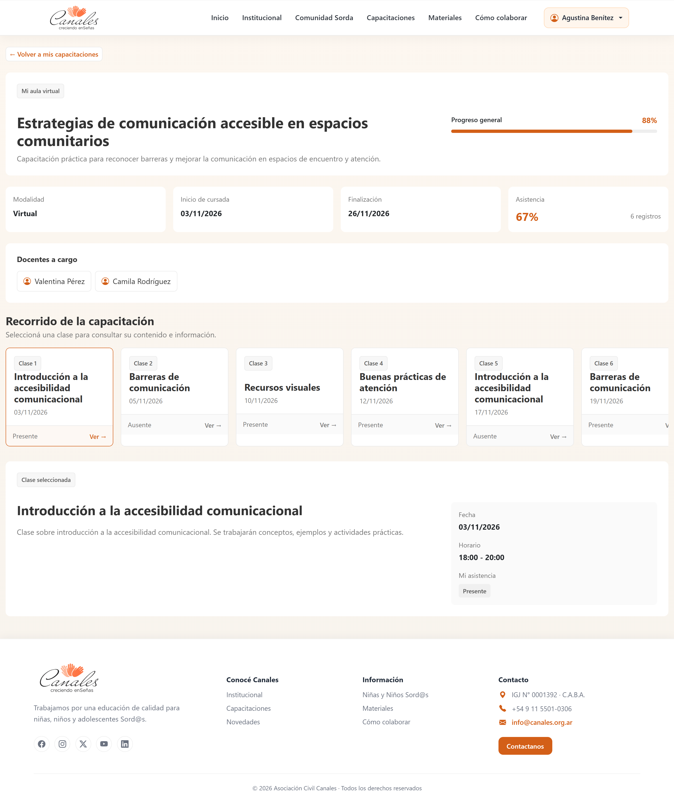
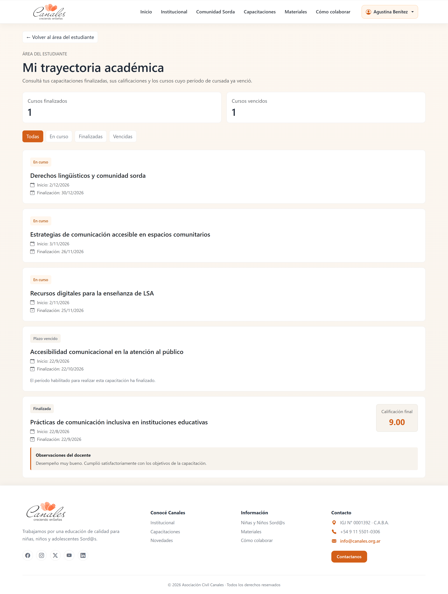
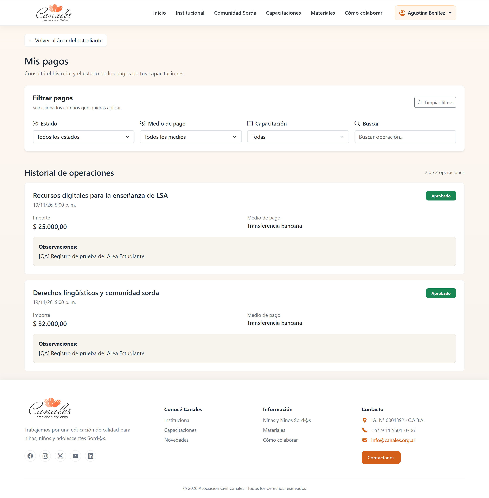

Área del estudiante
En esta guía vas a aprender cómo inscribirte a una capacitación, acceder a tu cuenta y utilizar las herramientas disponibles para consultar tus cursos, clases, trayectoria académica y pagos.
Cómo inscribirme a una capacitación
Si querés participar de una capacitación de CANALES, primero tenés que realizar la inscripción. El procedimiento depende de si ya tenés una cuenta en la plataforma o si es tu primera vez.
1. Explorá las capacitaciones disponibles
Ingresá a la sección Capacitaciones desde el sitio público. Allí podés consultar las propuestas disponibles, leer sus descripciones y revisar la información de cada curso.
Catálogo de capacitaciones
Desde esta sección podés explorar las propuestas y elegir aquella en la que quieras participar.

2. Seleccioná la capacitación
Una vez que hayas elegido una propuesta, iniciá el proceso desde la opción de inscripción correspondiente a esa capacitación. Revisá que se trate del curso que querés realizar antes de continuar.
Detalle de una capacitación
En la información de cada propuesta encontrás el acceso para comenzar la inscripción.

3. Iniciá sesión o registrate para continuar
Para inscribirte a una capacitación necesitás tener una cuenta en CANALES. Al seleccionar la opción Inscribirse, la plataforma te dirigirá a la pantalla de inicio de sesión o registro, según corresponda.
Si todavía no tenés una cuenta
Seleccioná la opción de registro y completá el formulario con tus datos para crear una cuenta en la plataforma. Una vez registrado, iniciá sesión para continuar con la inscripción a la capacitación seleccionada.
Si ya tenés una cuenta
Iniciá sesión con tu correo electrónico y contraseña para continuar con el proceso de inscripción. No necesitás crear una cuenta nueva.
Consultá la sección Primeros pasos del Manual de Usuario para conocer cómo crear una cuenta y realizar una inscripción.
Proceso de inscripción
Una vez que hayas iniciado sesión, seleccioná la capacitación y completá el proceso de inscripción. Este consta de tres pasos:
1. Datos personales
Completá los datos solicitados en el formulario para identificar tu inscripción. Verificá que la información ingresada sea correcta antes de continuar.
2. Revisión
Revisá los datos de la capacitación seleccionada y la información de tu inscripción. Si necesitás corregir algún dato, podés hacerlo antes de avanzar.
3. Confirmación
Confirmá la inscripción para finalizar el proceso. Si la capacitación es gratuita, la inscripción quedará confirmada. Si es arancelada, deberás realizar el pago correspondiente.

¿La capacitación es gratuita o arancelada?
El procedimiento de inscripción es el mismo, pero el paso de confirmación varía según la modalidad de la capacitación.
Capacitaciones gratuitas
No requieren realizar ningún pago. Una vez que confirmes la inscripción, esta quedará registrada como confirmada.
Capacitaciones aranceladas
Requieren abonar un importe por la capacitación. Se trata de un pago único, no de una cuota mensual ni de un cobro recurrente.
Para realizar el pago, la plataforma ofrece dos alternativas:
Podés realizar el pago directamente mediante Mercado Pago. Una vez aprobado el pago por la plataforma, la inscripción se confirma automáticamente.
Podés realizar una transferencia y adjuntar el comprobante de pago desde la plataforma. La inscripción quedará pendiente hasta que se verifique el comprobante.
Resultado de la inscripción
Una vez finalizado el proceso, podrás consultar el estado de tu inscripción desde tu Área Estudiante. En las capacitaciones aranceladas, el estado dependerá de la modalidad de pago elegida.
5. Ingresá a tu cuenta
Cuando ya tengas acceso a tu cuenta, iniciá sesión en CANALES. Desde el menú de usuario vas a poder ingresar al Área del estudiante y consultar las capacitaciones asociadas a tu cuenta.
Te permite consultar tus inscripciones y acceder a las herramientas del área privada.
Desde el área vas a poder revisar tus capacitaciones, trayectoria y pagos registrados.
Área del estudiante
Una vez que hayas iniciado sesión con una cuenta que tenga el rol de Estudiante, vas a poder acceder a un espacio desde el que consultar tus capacitaciones y tu trayectoria académica.
¿Dónde encuentro el Área del estudiante?
Iniciá sesión en CANALES y desplegá el menú de usuario desde la navegación principal. Allí vas a encontrar la opción Área del estudiante. Seleccionala para ingresar.
El acceso al área se encuentra dentro del menú desplegable que aparece al iniciar sesión. Seleccioná tu nombre en la barra de navegación para desplegar las opciones disponibles.
¿Qué puedo hacer desde esta sección?
Al ingresar vas a encontrar un saludo personalizado y accesos a las principales herramientas de tu cuenta:
Consultá las capacitaciones vigentes en las que estás inscripto y accedé a su información.
Revisá tus capacitaciones finalizadas, vencidas y las calificaciones disponibles.
Consultá las operaciones asociadas a tus capacitaciones y el estado de cada una.
Tu panel principal
El panel funciona como punto de entrada a las distintas herramientas. Seleccioná la tarjeta de la sección que quieras consultar para acceder a su contenido.
Pantalla principal del Área del estudiante
Desde este panel podés ingresar a tus capacitaciones, trayectoria y pagos.

Mis capacitaciones
En esta sección podés consultar las capacitaciones vigentes en las que estás inscripto y acceder al detalle de cada una.
Consultá tus capacitaciones
La pantalla muestra las capacitaciones confirmadas que todavía se encuentran dentro de su período de realización. Cada tarjeta presenta información para identificar el curso y conocer sus fechas.
Información de cada capacitación
- Nombre y descripción de la capacitación.
- Modalidad, cuando está informada.
- Fecha de inicio y fecha de finalización.
- Docente o docentes asignados, cuando están disponibles.
- Acceso al detalle de la capacitación.
Actualizá el listado
Si necesitás volver a consultar la información, utilizá el botón Actualizar para cargar nuevamente tus capacitaciones.
Ingresá a una capacitación
Seleccioná la tarjeta de la capacitación que quieras consultar. Desde allí podés acceder a su detalle y revisar la información académica disponible.
Si todavía no tenés capacitaciones vigentes, la plataforma muestra el mensaje: «Actualmente no tenés capacitaciones en curso».
Listado de Mis capacitaciones
En esta pantalla podés identificar tus cursos vigentes, sus fechas y el acceso a cada detalle.

Aula virtual
Desde el detalle de una capacitación podés consultar su información general, el recorrido de clases y los registros de asistencia disponibles.
Ingresá al detalle de la capacitación
Desde Mis capacitaciones, seleccioná el curso que quieras consultar. Se abrirá su espacio de seguimiento, identificado en la plataforma como Mi aula virtual.
Detalle de la capacitación
Esta pantalla reúne la información general y el seguimiento de las clases.

Información general
En la parte superior se presenta un resumen de la capacitación. Según los datos disponibles, podés consultar:
- Nombre y descripción.
- Modalidad y fechas de realización.
- Porcentaje de asistencia y cantidad de registros.
- Docente o docentes asignados.
- Progreso general calculado a partir de las clases programadas.
Recorrido de clases
La sección de clases presenta el recorrido de la capacitación ordenado por fecha. Podés seleccionar una clase para consultar su tema o unidad, descripción, fecha, horario y estado de asistencia.
Seleccioná una clase del recorrido para consultar sus datos y el estado de asistencia registrado.
Estados de asistencia
La asistencia figura como registrada.
La ausencia cuenta con una justificación registrada.
La asistencia figura como ausencia.
Todavía no hay un registro de asistencia para esa clase.
¿Qué pasa si todavía no hay clases?
Si la capacitación todavía no tiene clases publicadas, vas a encontrar el mensaje: «Todavía no hay clases publicadas para esta capacitación».
Volvé a tus capacitaciones
Utilizá el botón para volver a Mis capacitaciones y consultar otra propuesta en la que estés inscripto.
Mi trayectoria
En esta sección podés consultar el historial de tus capacitaciones y revisar su estado, las calificaciones disponibles y las observaciones registradas.
Consultá tu historial
La pantalla reúne las capacitaciones asociadas a tu trayectoria. Podés utilizar los filtros para consultar todas las propuestas o concentrarte en un estado particular.
Filtros disponibles
Capacitaciones que todavía se encuentran en desarrollo.
Capacitaciones que cuentan con un estado académico de finalización.
Capacitaciones cuyo plazo de realización ya terminó.
Listado de Mi trayectoria
Desde esta pantalla podés filtrar tus capacitaciones y consultar su estado.

Calificaciones y observaciones
Cuando una capacitación está finalizada, la tarjeta puede mostrar la calificación final y las observaciones del docente, si fueron registradas. Si todavía no hay una nota disponible, se indica como Pendiente.
Tené en cuenta la diferencia entre finalizada y vencida
Una capacitación vencida es aquella cuyo plazo terminó. Esto no significa necesariamente que esté aprobada ni que haya sido finalizada académicamente. Para conocer el resultado de una capacitación, revisá su estado y la calificación registrada.
Mis pagos
En esta sección podés consultar el historial de operaciones asociadas a tus capacitaciones y revisar el estado de cada pago.
Consultá tus operaciones
Los pagos se presentan ordenados desde el más reciente hasta el más antiguo. Cada registro puede incluir el nombre de la capacitación, la fecha y hora de la operación, el importe, la moneda, el medio de pago, el estado y las observaciones disponibles.
Historial de pagos
En el listado podés consultar las operaciones registradas y sus datos principales.

Estados de los pagos
La operación figura como aprobada.
La operación todavía figura pendiente.
La operación figura como rechazada.
Aplicá filtros para encontrar un pago
Si tenés varias operaciones registradas, podés combinar los filtros disponibles para localizar una en particular:
- Estado: todos, aprobado, pendiente o rechazado.
- Medio de pago: todos o alguno de los medios registrados.
- Capacitación: todas o una capacitación específica.
- Búsqueda: permite buscar por título de capacitación, medio de pago o estado.
El botón para limpiar filtros permite volver a consultar el listado sin los criterios aplicados. También se muestra la cantidad de operaciones encontradas respecto del total.
Si todavía no tenés pagos registrados, la plataforma muestra el mensaje Todavía no tenés pagos registrados. Si los filtros aplicados no encuentran coincidencias, se muestra No encontramos operaciones.